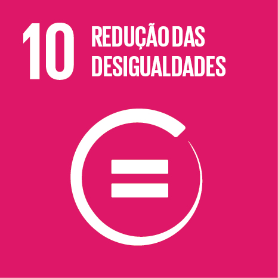

Projeto F3
Procuramos valorizar o que há de melhor em cada ser humano, trazendo a história de cada indivíduo para que sejam protagonistas de suas próprias vidas a partir de medidas que visam a redução de desigualdades.
Sabemos que a condição em que as pessoas têm acesso aos seus direitos como cidadão ocorre de maneira desigual. Os recursos, as oportunidades, os direitos são diferentes para pessoas com condições menores de renda, educação, saúde, moradia, segurança e participação política. A desigualdade social afeta negativamente a qualidade de vida das pessoas e o desenvolvimento sustentável.

1. Coopere
Com ações simples, você pode proporcionar oportunidades igualitárias e ajuda a construir uma sociedade mais justa.

2. Doe
Estar atento às necessidades básicas do próximo é uma atitude que promove equidade. Porém atente-se se a instituição é séria e transparente em relação ao destino das doações.
3. Escolha bem
Tenha consciência na escolha de representantes que estejam direcionados a enfrentar as desigualdades. Avalie de forma crítica as propostas de governo e consulte a ficha limpa.
4. Fiscalize
Consulte boletins eletrônicos da Assembléia Legislativa, Câmara dos Deputados, Senado Federal, Tribunal de Contas, Ministério Público etc Cobre seus candidatos eleitos.
5. Fake news
Preze por conteúdos oficiais. Tome muito cuidado com informações compartilhadas em redes sociais. Oriente as pessoas próximas sobre os riscos das fake news.

6. Eduque
A educação é um dos pilares da diminuição das desigualdades pois garante profissionalização, trabalho e renda. Dê oportunidade aos jovens doando livros, dando aulas para quem tem dificuldade de compreensão ou não tenha acesso ao estudo.
Instituições Parceiras
Lar Dona Maria
Abriga crianças carentes protegendo contra o crime, as drogas e o trabalho infantil.
Rua Esperança, 91 casa amarela
Albergue Carlos José
Proporciona alimentação, higiene e treinamento profissional aos adultos.
Avenida das Nações Unidas, 18.273

Fundação Jeca Tatu
Visa proporcionar qualificação profissional, assistência médica e aconselhamento psicológico.
Rua Hope, 515
Sobre Mim
Olá, meu nome é Karin. Estudo desenvolvimento web no Elas na Tech e estou aprendendo HTML e CSS. Fiz este trabalho baseado na trilha "Meu Primeiro Site" da Inspira JA. Sou muito grata pela oportunidade e pela atenção da professora Juliana e monitoras da turma 3 assíncrona Erika e Vanessa.